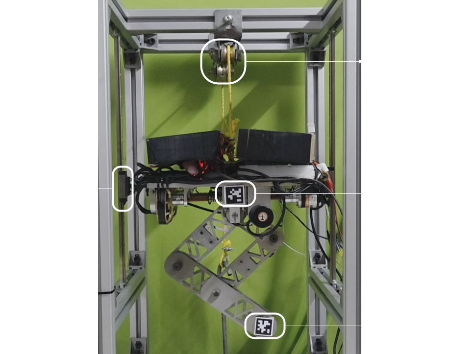
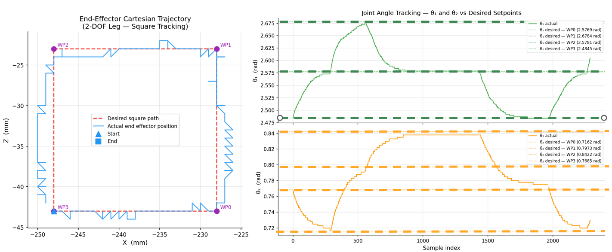
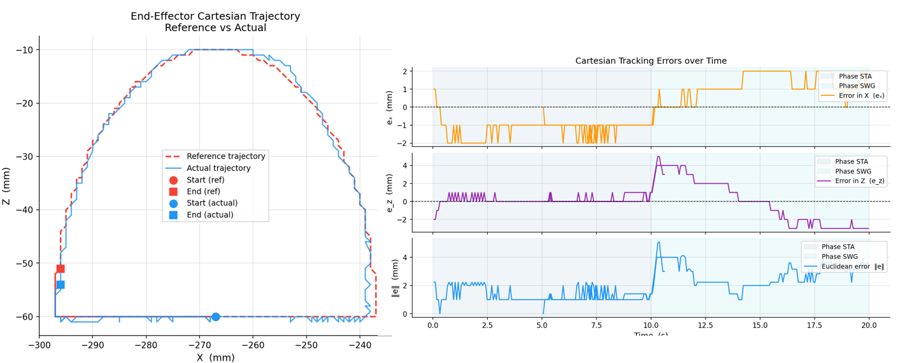

Designed a quadruped leg with a parallelogram-based actuation linkage integrated with a patented Rotary Series Elastic Actuator (RSEA) — built, simulated, and validated end-to-end from CoppeliaSim to physical hardware, proving the base system is robust enough for future development into a full quadruped platform.
Quadrupedal locomotion offers a reliable way to traverse uncertain environments. Unlike wheeled robots, quadrupeds don't require continuous ground contact, and unlike aerial drones, they're unaffected by destabilising ground effects — making them well suited to safety-critical and first-response applications where adaptability is crucial.
Despite these advantages, quadruped technology remains far from widespread adoption. Three primary barriers stand in the way: high system cost, limited energy efficiency (which reduces runtime and accessibility), and a lack of fail-safety. Existing designs also still fall short of replicating the natural agility of animals — and a major bottleneck lies in actuator design, since actuators directly determine torque output, compliance, and overall agility.
Conventional electric motors require gear reductions to achieve sufficient torque, but gearboxes introduce friction, backlash, torque ripple, and wear. High reduction ratios also cause an N² increase in reflected inertia, so shock loads translate into much higher forces on the gear teeth — in lightweight actuators, it's often the gearing's load rating, not the motor, that limits peak torque, and shock-induced gear failures are not uncommon.
Quasi-direct drive (QDD) actuators partially address this by combining low-ratio gearboxes with high-torque motors, but their reliance on expensive components significantly raises system cost. Without a passive compliance element, QDDs also require compliance to be actively encoded into the controller itself.
Series Elastic Actuators (SEAs) mitigate these problems by introducing an elastic element between the gearbox and the load, improving shock tolerance and energy efficiency. Since quadrupeds demand rotary joint motion, this project focuses on a Rotary SEA (RSEA).
The project spans the full development pipeline: building a simulation testbed in CoppeliaSim, designing the leg in SolidWorks for manufacturability and ease of assembly across several design iterations, constructing the physical test bed, validating joint-space PD control on hardware (ESP32 + ODrive), and performing trajectory control tests ranging from inverse kinematics validation to full trajectory tracking.
Achieved stable height-switching gait trajectories across a 60 mm range, with hardware tracking error converging to within 0.01 radians using the tuned PD controller — confirming the base mechanism and control architecture is robust enough to extend into a full quadruped platform equipped with RSEAs at every joint.

Physical leg prototype with RSEA

Inverse kinematics verification

Trajectory tracking results
Currently integrating terrain perception using the Koopman operator framework for sensor-less terrain stiffness detection — distinguishing swing and stance phases from encoder data alone, and using eigen analysis of the stance Koopman generators to adapt controller gains in real time. This builds directly on the simulation results from my course project on data-driven terrain detection for quadruped locomotion, extending it from simulation to validation on physical hardware.